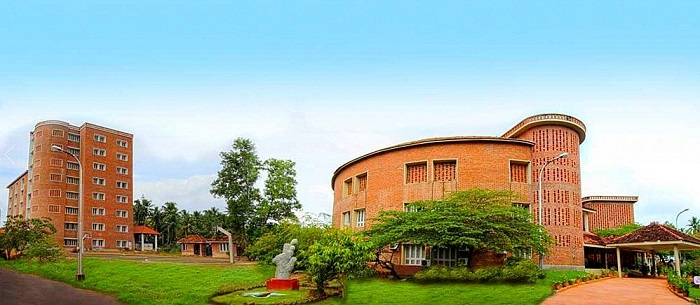

NISH conducts BSc (Computer Science) (HI), Bachelor of Fine Arts (HI) & B.Com (HI) programs exclusively for the deaf and hard of hearing. The scheme and syllabus have been so designed that there are substantial practical content and less theory. The University of Kerala would award a degree to successful candidates.
